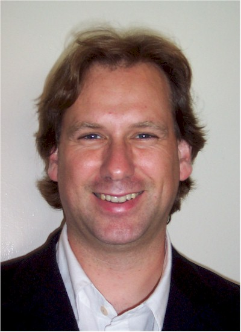

|  | Stephen Marquard
University of Cape Town |
|
Bio: Stephen Marquard is Learning Technologies Co-ordinator in the Centre for Educational Technology at the University of Cape Town, South Africa's oldest university, where he is responsible for campus-wide learning environments and other educational technology applications. UCT will be deploying Sakai in February 2006, positioned to become UCT's primary learning environment for all courses in 2007. Prior to joining the UCT, Stephen's involvement with the intersection of education and ICTs started over a decade ago when he formed the first schools network in Africa. Stephen convened and produced 4 precedent-setting conferences on educational technology in primary and secondary education in South Africa between 1995 to 2001, and was instrumental in the formation of SchoolNet South Africa, an award-winning national organization which worked to address digital divide access issues and developed innovative e-learning approaches for the professional development of teachers. Stephen subsequently worked as an international consultant in educational technology in Africa and South-East Asia for clients such as UNESCO, the Commonwealth of Learning, Schoolnet Africa and Openlab, and in 2004 co-produced with UCT the first Southern African online e-learning conference, e/merge2004, focusing on blended collaborative learning in Southern Africa. Stephen combines significant organizational leadership and strategy experience with hands-on software development involvement. Open source interests beyond Sakai include the jabberd2 XMPP server project, for which Stephen is project co-ordinator. Stephen has been actively involved in the Sakai community since May 2005, particularly in the QA Working Group. The UCT team contributed to the 2.0.0 and 2.0.1 release cycles, and is involved in ongoing QA planning and the 2.1 QA effort. Other areas of current involvement include the Requirements Process WG, the Jabber/XMPP WG, and design input for the CARET RWiki tool. At a regional level, Stephen has facilitated collaboration amongst the 4 universities adopting Sakai in South Africa, and his nomination is supported by these institutions. Personal and research areas of interest including online collaboration and online communities, the dialectical relationship between pedagogy and technology, user-driven appropriations of technology which lead to unanticipated uses, and virtual presence. Platform:
In choosing community source, we all seek control of our own e-learning destinies, flexible and agile solutions which support education and push the pedagogical envelope, yet which at the same time are robust, scaleable, cost-effective and sustainable. I bring to the Sakai Project the experiences of a country and education community working daily with the challenges of diversity, bridging developed and developing country contexts. This means focusing on delivering educational value to students from a wide range of backgrounds, continuously improving the quality of teaching and learning to support the differing academic needs of students, and a commitment to researching the real impact of educational technologies in ways which inform future practice. In contributing leadership to the Sakai Project, my priorities would be to advance: 1. A global Sakai community: a vibrant community which works across timezones and around the clock, a diverse, multicultural and multilingual community actively synergising its diverse perspectives. 2. Flexible and responsive design which supports effective pedagogy, and enables Sakai to act as a platform for innovation 3. Quality user interface design, focusing on usability as the most important issue. On behalf of fellow South African universities adopting Sakai, I represent a specific interest in evolving Sakai's suitability for distance education applications and low-bandwidth conditions, and am also keenly interested in making it easier for new institutions to adopt and extend Sakai, particularly in developing country contexts. | |